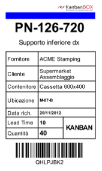

Avviare una gestione kanban in azienda significa stabilire per ogni componente l’intero flusso logistico.
Avviare una gestione kanban in azienda significa stabilire per ogni componente l’intero flusso logistico.
L’immagine rappresenta tutti gli step operativi per avviare una gestione kanban.
Scelta degli articoli da mettere a kanban
Il Kanban si applica molto bene a quei componenti che presentano consumi continuativi. Inoltre otterremo facilmente ottimi risultati per tutti quei componenti dei quali è complesso determinare il consumo in modo esatto: in questa categoria rientrano sicuramente tutti quei componenti difficili da contare come viterie, vernici, minuterie plastiche e metalliche di vario tipo, siliconi, colle, lubrificanti, ecc.
Si ottengono ottimi risultati anche con i componenti forniti da processi produttivi con sovraccapacità.
Mediamente l’80% dei componenti utilizzati in azienda dovrebbero essere gestiti a kanban: quindi cerca i componenti migliori per partire e non aver paura di sbagliare.
Calcolo dei consumi
Conoscere o stabilire quale sarà il consumo massimo che vogliamo far gestire ai nostri kanban è fondamentale per poter fare un corretto dimensionamento. I dati sui consumi sono una buona base di partenza ma è sempre meglio andare a vedere fisicamente nel gemba come l’articolo viene consumato.
Ricordati, per il dimensionamento ci serve il consumo massimo che può verificarsi durante il periodo di ripristino. Il periodo di ripristino di un kanban è detto lead time.
In altre parole, questo significa che il consumo massimo dipende dal periodo di ripristino: articoli con un lungo lead time avranno verosimilmente un consumo massimo inferiore, che si avvicina cioè alla media del periodo. Articoli con un lead time breve avranno un consumo massimo più elevato durante tale periodo di ripristino, in quanto maggiormente soggetti ai picchi di consumo.
Scelta del contenitore
Scegliere il contenitore più opportuno da utilizzare per un kanban significa valutare molti aspetti:
- La modalità di movimentazione, in particolare se il contenitore dovrà essere spostato manualmente o con che mezzo di sollevamento
- Dove verrà posizionato: a bordo linea, in una scaffalatura o su carrello
- Come sarà fatto il prelievo dei componenti all’interno del contenitore
- Se il contenitore dovrà garantire la protezione dei pezzi durante il trasporto
- L’importanza della standardizzazione in azienda anche dei contenitori usati per il kanban
Lead time del fornitore
Successivamente va calcolato e concordato con il fornitore il tempo necessario al ripristino del componente.
Il tempo che serve da quando un kanban viene svuotato a quando lo stesso kanban ritorna disponibile a supermarket per il prelievo viene definito Lead Time.
Il lead time per i kanban è dato dalla somma di:
- Tempi di trasmissione dell’informazione
- Set-up del fornitore
- Tempi di trasporto
- Imprevisti
Non trascurare il tempo di trasmissione dell’informazione, spesso è superiore al tempo che viene concesso al fornitore per produrre i componenti. Con il kanban elettronico puoi rendere immediata questo scambio di informazione.
Vincoli fisici del fornitore
Dimensionare un kanban senza interagire con il fornitore (interno o esterno) è profondamente sbagliato. Il mio fornitore può avere dei lotti minimi o multipli di produzione, oppure dei vincoli tecnologici che vanno considerati. Coinvolgere il fornitore nell’implementazione del kanban è garanzia di successo.
Creare il cartellino kanban

Sul cartellino kanban devono essere riportate tutte le informazioni necessarie al fornitore e al cliente per far girare correttamente il kanban.
Alcune di queste informazioni sono indispensabili come:
- Il codice del componente interessato
- Il fornitore di quel componente
- Il cliente che lo richiede
- Il tempo a disposizione per il ripristino
- La quantità da ripristinare
- Il contenitore da utilizzare
Altre informazioni possono essere utili a seconda dell’azienda:
- Tipo di kanban
- Ubicazione del supermarket dove riposizionare i kanban ripristinati
- Ubicazione presso il fornitore della materia prima necessaria al ripristino
- Dettagli sul set-up della macchina del fornitore
- L’immagine del componente e/o del contenitore
La dimensione e la forma del cartellino variano ma non dimenticarti che il cartellino dovrà essere attaccato su tutti i tuoi contenitori e potrà dover essere appeso a un tabellone.
Fatti aiutare
Se vuoi iniziare ad utilizzare il kanban oppure vuoi migliore le performance del tuo sistema kanban contattaci scrivendo a info@kanban.it.